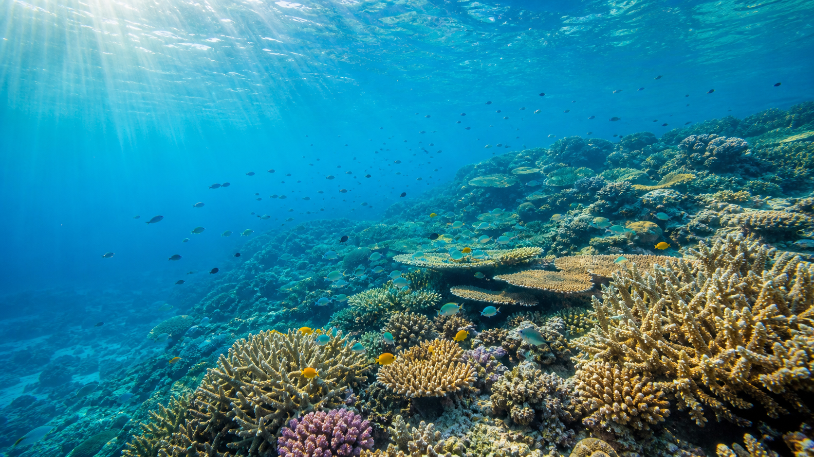

Adapted evidence reading
Help the Great Barrier Reef
The Reef is alive, but it is under pressure. What facts can help us explain why it needs protection?
1A huge living place
The Great Barrier Reef is not one wall of coral. It is a huge living system along the Queensland coast. It has about 3,000 reefs, as well as islands, seagrass, mangroves and deep water. Fish, turtles and many other animals live there.
The Reef is also Sea Country. Aboriginal and Torres Strait Islander Traditional Owners have cared for this area for a very long time. Today, Traditional Owners use cultural knowledge and science to help care for the Reef.
2What scientists found
Scientists check the Reef to see how it changes. In 2024-25, they checked 124 reefs. They still found living coral in the north, centre and south, but coral cover had fallen. Hot water and other pressures had damaged coral.
Coral animals live with tiny algae that give them food and colour. Very warm water can make coral push out the algae and turn white. This is called bleaching.
Bleached coral is stressed, but it is not always dead. Some coral can recover if the water cools. Coral can die if the heat is very strong, lasts too long or returns before the coral has recovered.